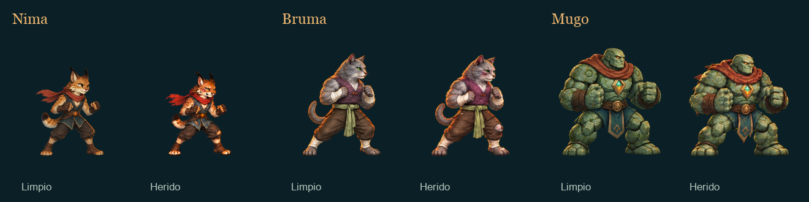

El combate queda en la ropa y en el rostro
Posturas cansadas, expresiones magulladas y prendas rasgadas pintadas en cada gesto. Los 23 cuerpos conservan su identidad, sus materiales y su tamaño físico: el daño forma parte de la ilustración.

23 cuerpos, 39 PNG, fixtures aisladas. Regresión headless: seis suites, 56 484 comprobaciones, cero fallos. La evidencia de juego se distingue de esta página de revisión.
Qué cambia en cada estado
| Estado | Arte dibujado | Comportamiento de presentación |
|---|---|---|
| 0 · Preparado | Biblioteca limpia existente. | Guardia y acciones normales. |
| 1 · Desgastado | La misma biblioteca limpia. | Fatiga mediante las poses existentes; sin manchas procedurales. |
| 2 · Dañado | Familia herida completa: 8 + 16 + 16 poses. | Heridas y roturas continúan en movimientos, reacciones, victoria y caída. |
| 3 · Crítico | La misma familia ilustrada del grado 2. | Conserva el estado crítico y el desenlace. No es otra colección de imágenes. |
La presentación no modifica PV, estadísticas, iniciativa, RNG, recompensas ni inventario. Curarse durante el combate no repara la ropa; una nueva batalla reinicia el estado.
Biblioteca de poses
Cada pareja usa la misma celda y escala. Cambia el fondo para revisar bordes y huecos internos; pulsa Ampliar para ver el atlas original recortado por su región. Las superficies clara y oscura pertenecen al visor, no al PNG.
Los 23 cuerpos
Transparencia y geometría
Los originales nuevos se generaron sobre un color plano de extracción. El proceso autorizado elimina ese fondo también dentro de brazos, piernas, colas y tela rota. El PNG final tiene alfa real; un patrón de cuadros pintado no cuenta como transparencia.
Se aplica un único escalar por banco, celda de 512 × 512, pivote en 256/448 y densidad de 1,5 píxeles por unidad. Una postura encorvada queda más baja: no se infla para igualar su caja al reposo limpio.
Los apoyos proyectados se registran como aproximados. Donde falta una mano anotada sobre el dibujo nuevo, el contacto usa el borde delantero pintado como aproximación visual. No equivale a anatomía certificada, un collider o una modificación del alcance lógico.
Procedencia, limpieza y límites
El manifiesto registra originales, hashes de fuentes limpias y nuevas, metadatos finales, prompts disponibles y revisiones vinculadas a la fuente. Ascua conserva byte por byte sus tres bancos critical-v1 ya existentes; no se presenta como una generación nueva.
Los controles numéricos de alfa y geometría no bastan para aprobar una imagen. La inspección revisa color de ojos, rostro, prendas, equipos, siluetas enteras y huecos sobre fondos claro/oscuro. Los sockets anatómicos ausentes permanecen declarados como tales.
Las miniaturas de esta página reducen uniformemente el atlas al 50%. No alteran los PNG de producción. El arte limpio previo, los documentos históricos y las fuentes originales se conservan.